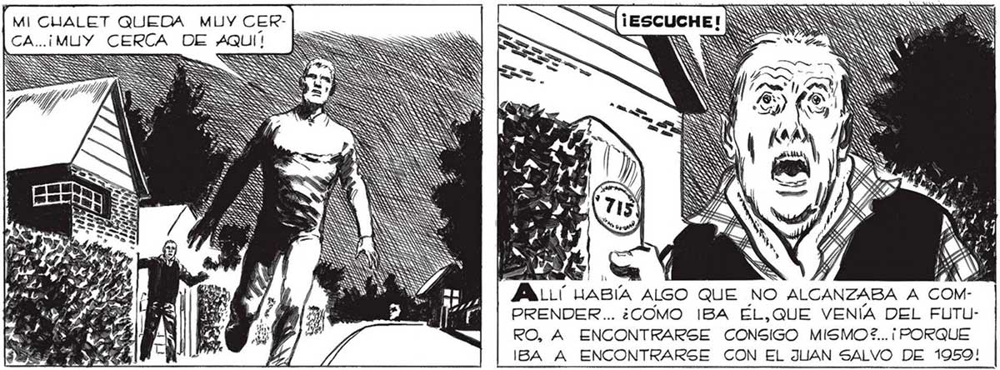
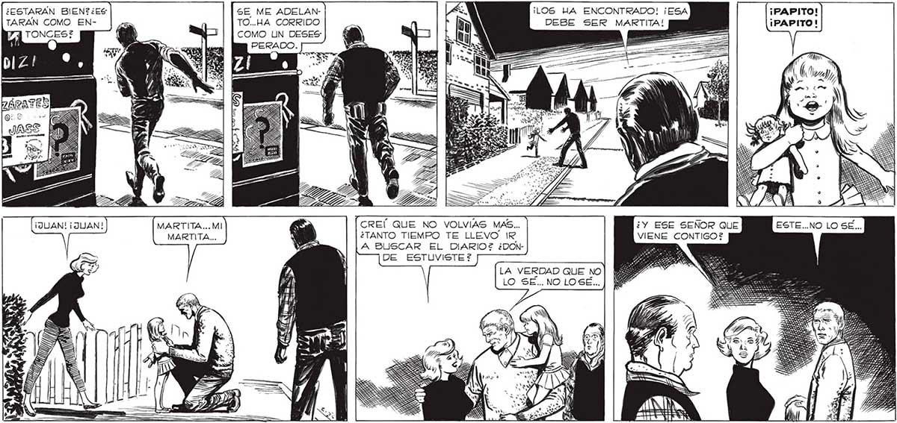

360 h No me ovO, CORRIO ESCALERAS ABAJO. FUI TRAS DE ÉL... ¿ESTARAN BIEN?¿ES TARAN COMO ENMARTITA...MI MARTITA... SE ME ADELANTO...HA CORRIDO COMO UN DESES* PERADO. = NS yr MI CUALET QUEDA MUY CERMUY CERCA DE AQUÍÍ RU TRES SS SS NS DS NS SGT FA ve ho JALLU LABÍA ALGO QUE NO ALCANZABA A COMPRENDER... ¿COMO IBA EL,QUE VENÍA DEL FUTURO, A ENCONTRARSE CONSIGO MISMO?... ¡ PORQUE IBA A ENCONTRARSE CON EL JUAN SALVO DE 19509! ¡LOS HA ENCONTRADO! ¡ESA ¡PAPITO! DEBE SER MARTITA! ¡PAPITO! CREÍ QUE NO VOLVIAS MAS... ¿TANTO TIEMPO TE LLEVO IR A BUSCAR EL DIARIO? ¿DONDE ESTUVISTE ? LA VERDAD QUE NO LO SE... NO LOSE...

